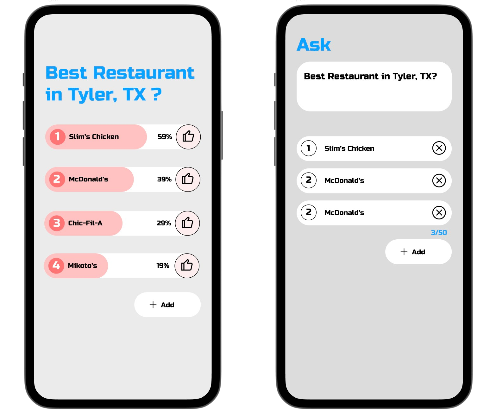
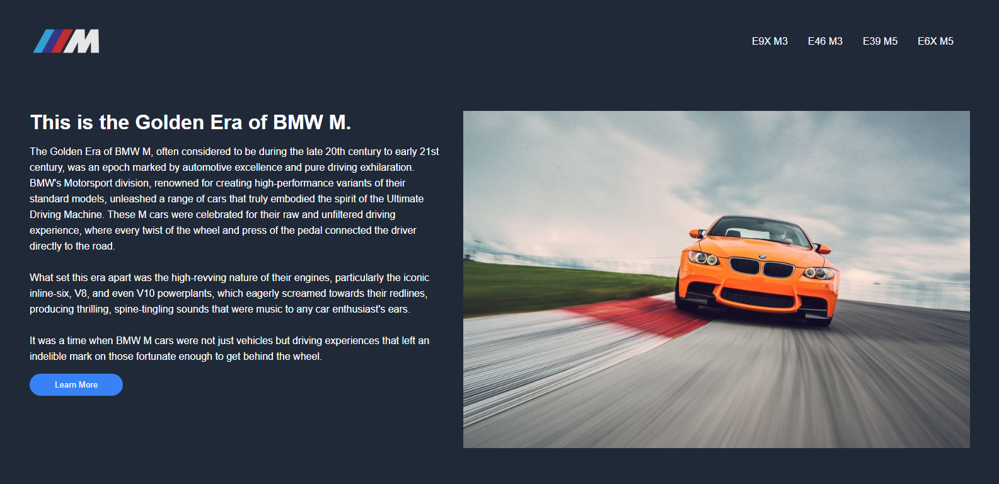
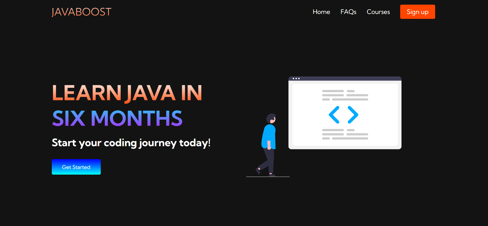
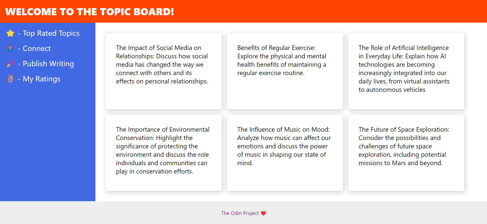

Allow me to introduce myself.
I am a self-driven Computer Science student at the University of Texas at Tyler, on track to graduate in May 2024. My proficiency extends to programming languages such as Java, C, Python, HTML, CSS, and JavaScript, with a particular focus on web development. Over the course of my three-year academic journey, I have had the privilege of engaging with accomplished peers and participating in collaborative projects. This invaluable experience has significantly contributed to my ongoing personal and intellectual development, fortifying my unwavering commitment to the pursuit of knowledge.
My career aspirations revolve around securing a position in web development, while remaining receptive to other promising avenues within the realm of software development. I am unwavering in my commitment to continuous learning and will go to great lengths to consistently deliver work of the utmost quality. Challenges are not obstacles, but rather opportunities that I wholeheartedly embrace.
In my spare time, I find great pleasure in the duality of my interests. Coding and learning serve as a constant source of intellectual engagement, allowing me to explore the ever-evolving world of technology. Simultaneously, I enjoy the opportunity to balance this with the camaraderie of my friends, often attending car events where our shared passion for automotive culture flourishes. This unique blend of pursuits grants me a well-rounded and fulfilling leisure experience, supporting both my analytical and social dimensions.
Technical Skills
- Java
- C
- Python
- HTML
- CSS
- JavaScript
- ReactJS
Projects
TopicLadder
The Poll Creation and Voting App delivers a smooth and immersive user experience for those looking to engage in polls without the need for user authentication. By utilizing ReactJS, ExpressJS, and PostgreSQL, this app offers a strong, real-time, and user-centric platform for both creating and participating in polls, ensuring accessibility to a broad audience of users.
BMW Informative Webpage
JavaBoost Landing Page
Topic Board Landing Page
Experience
Discount Tire Co.
(August 2020 - Present)
In a dynamic and high-paced work setting, I led a team of up to five skilled technicians, ensuring not only their efficiency but also the overall organization of operations. My role extended to effective customer communication, guaranteeing that their specific requirements were met to their satisfaction. Furthermore, I took on the responsibility of promptly resolving any challenges encountered by the technicians during their service tasks, ultimately streamlining job completion and enhancing overall efficiency.